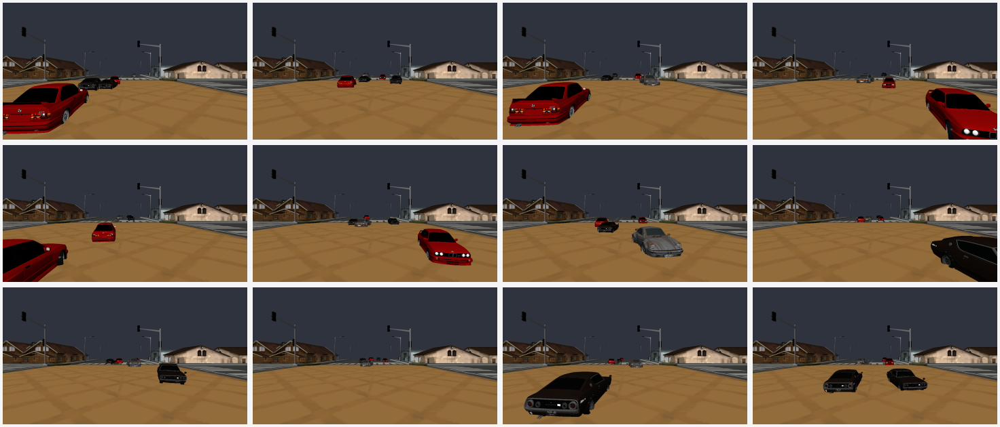
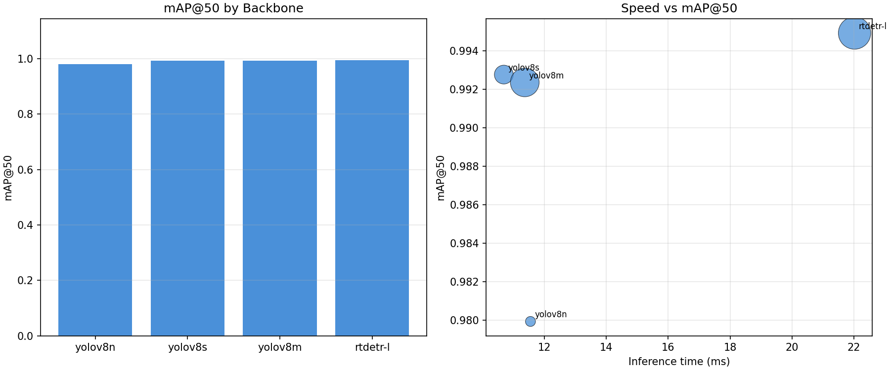
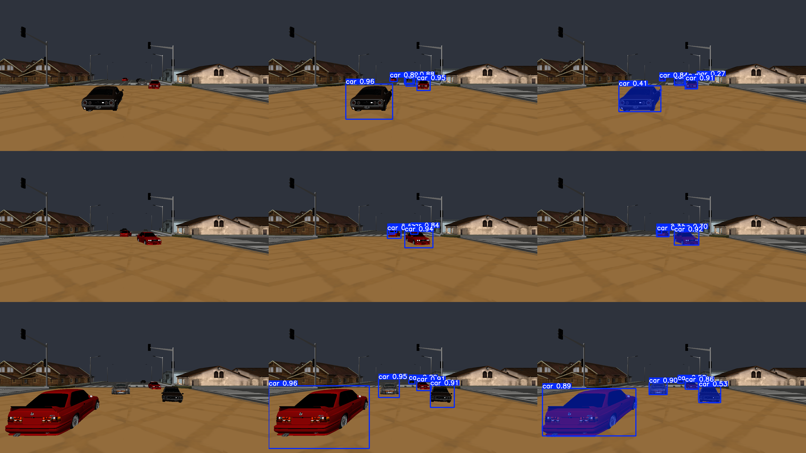
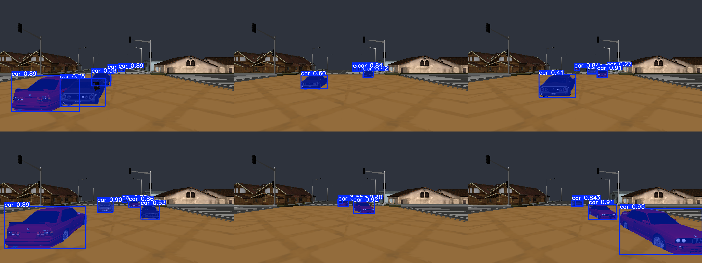
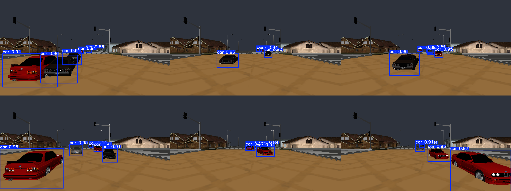
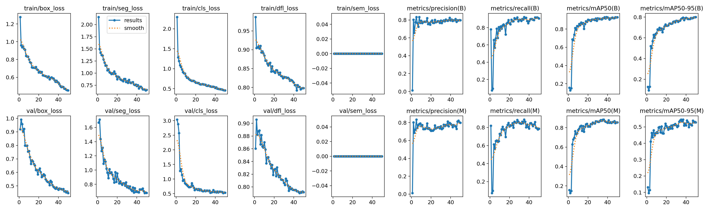

Computer Graphics Course Project
VisionDrive3D: Synthetic Driving Data for Detection & Segmentation

Abstract
Abstract
We present VisionDrive3D, a synthetic driving scene renderer that generates RGB images with ground-truth bounding boxes, segmentation masks, and depth maps. We fine-tune YOLOv8 detection and segmentation models on this synthetic data and evaluate transfer quality. Results show improved in-domain performance after fine-tuning compared with zero-shot baselines.
Dataset
Dataset
| Resolution | Classes | Train | Val | Test | Format |
|---|
Method
Method
Stage 1. VisionDrive3D renders multi-car urban traffic scenes and exports aligned image, depth, and annotation outputs.
Stage 2. We train YOLOv8 detection and segmentation models with deterministic train/val/test splits from synthetic images.
Stage 3. We compare zero-shot and fine-tuned checkpoints, then profile backbone quality-speed trade-offs on the held-out test split.
Results
Results
Detection and Segmentation Comparison
| Model | Type | mAP@50 | mAP@50-95 | Speed (ms) |
|---|
Backbone Comparison
| Model | mAP@50 | mAP@50-95 | Precision | Recall | Speed (ms) | Params (M) |
|---|
Backbone Plot

Latest Inference Visuals (Contour Labels)
Updated qualitative outputs from YOLOv8n-seg retraining with contour-extracted polygons.




Qualitative
Qualitative
Conclusion
Conclusion
VisionDrive3D provides an end-to-end synthetic data workflow for object detection and segmentation. Fine-tuning on renderer-generated supervision improves target-task metrics, while model-family comparisons expose practical accuracy-speed trade-offs for deployment.
Downloads